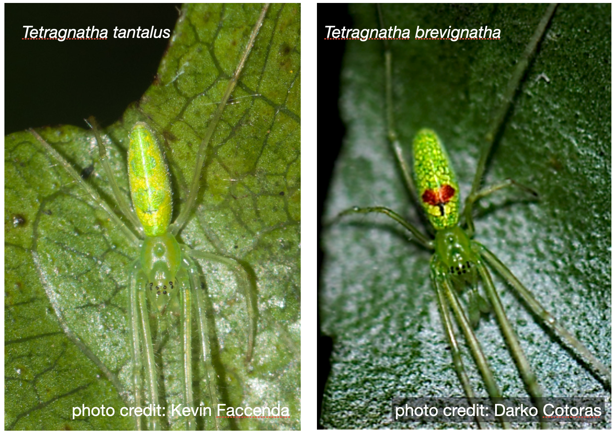
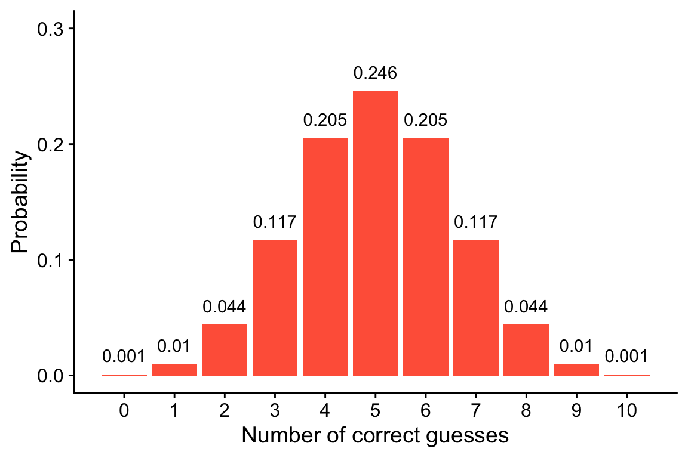

7 Null Hypothesis Significance Testing
Due Thursday, Feb 29, 2024 before lecture
Submit your answers via Google Classroom
Identifying \(H_0\) and \(H_A\)
Questions 1–3 will get you thinking about what distinguishes null and alternative hypotheses
- Give an appropriate null hypothesis for this alternative hypothesis [1 point]:
\(H_\textrm{A}\): The mean leaf size of plants from tropical latitudes is different than the mean leaf size of plants from temperate latitudes.
- Give an appropriate alternative hypothesis for this null hypothesis [1 point]:
\(H_0\): There is no difference in the mean blood concentrations of C-reactive protein (used to diagnose Crohn’s disease, units: mg/dL) in patients given a diet high in broccoli sprouts compared to the control group
- Determine whether each hypothesis below is more appropriate as a null hypothesis or an alternative hypothesis: [1 point]
- Hypothesis: sea water temperature changes the proportion of corals that experience bleaching.
- Hypothesis: the ratio of body mass to brain mass across mammals equals 1.
- Hypothesis: the average number of animal species within tropical latitudes is the same as the average number of animal species outside of the tropics
- Hypothesis: the effect of a new experimental drug called “feel better syrup” has no effect on duration of common cold symptoms
P-values, sample size, and whether the null is really true
Pay close attention to the details in questions 4–5!
Consider a clinical trial of a new drug to treat Alzheimer’s. Half the participants are given the drug; half are given a placebo control. Treatments are assigned at random. Assuming that the drug actually has no effect, which of the following statements is true? [1 point]
- A clinical trial with a larger sample is more likely than a smaller trial to get a result with \(p < 0.05\)
- A clinical trial with a larger sample is less likely than a smaller trial to get a result with \(p < 0.05\)
- A clinical trial with a larger sample is equally likely than a smaller trial to get a result with \(p < 0.05\)
- None of the above are true
Consider a clinical trial of a new drug to treat Alzheimer’s. Half the participants are given the drug; half are given a placebo control. Treatments are assigned at random. Assuming that the drug actually does reduce the chance of developing Alzheimer’s, which of the following statements is true? [1 point]
- A clinical trial with a larger sample is more likely than a smaller trial to get a result with \(p < 0.05\)
- A clinical trial with a larger sample is less likely than a smaller trial to get a result with \(p < 0.05\)
- A clinical trial with a larger sample is equally likely than a smaller trial to get a result with \(p < 0.05\)
- None of the above are true
Hawaiian Tetragnatha spiders
One very cool group of spiders in Hawaiʻi are the Tetragnatha spiders, which are an example of adaptive radiation. On each island, these spiders re-evolved distinctive color morphs that use different strategies to avoid depredation and catch prey. The “green” color morph is especially pretty. On Oʻahu there are two green morphs, one is T. tantalus shown above. On Hawaiʻi Island there is only one green morph–T. brevignatha. I used to spend a lot of time up in the ʻuka catching and identifying spiders, but being behind the computer all the time, I worry I lost those skills. A friend gave me a challenge: they showed me 10 pictures of Tetragnatha and told me 5 were T. tantalus, and 5 were T. brevignatha. My test was to correctly guess which was which. Don’t be fooled! Not all T. brevignatha have the red spot (some are all green), and some T. tantalus have a red spot of their own!
Out of 10 trials, I got 7 right. My “scientific” hypothesis is that I still know how to ID spiders, but statistically, is that really supported by these data?
7.1 Use the data from this totally true, not made up, spider identification test to answer questions 6–10.
What is the most appropriate test statistic for this “study” and what is its numerical value? [1 point]
What is the most appropriate null hypothesis? [1 point]
The figure below shows the null distribution for the number of correct guesses. Use this figure to calculate the p-value (assume a two-tailed alternative hypothesis). Round your answer to the nearest 0.001. [1 point]

Based on this hypothesis test and a significance level of \(\alpha = 0.05\), do you reject the null? What does that mean for how confident I should feel with my spider identification abilities? [1 point]
Let’s suppose, for my pride (!), that the null hypothesis is not true, has an error occurred in our hypothesis test? If so what kind of error? [1 point]